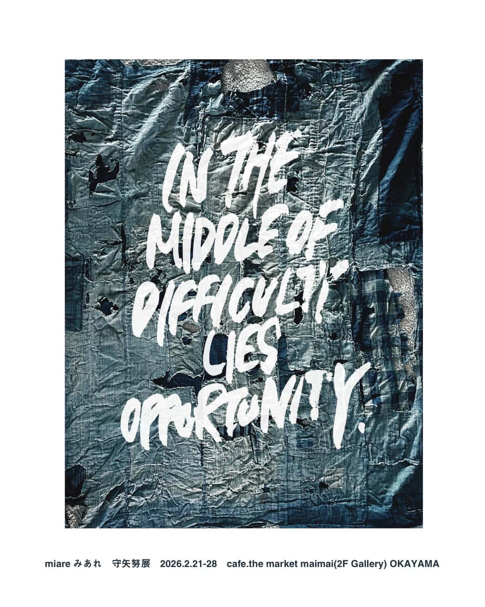

natsshutou
ナッッシュウトウ
Curator / Art Director｜現代美術
作品と場の関係を見立てる。

©Tsutomu Morya
Services
curation
展示の「前提」をつくります。
テーマ・作家・作品を選び、見せ方の構造を組み立てます。
direction
前提を「形」にします。
空間・動線・視線の配置を設計します。
writing
制作意図や背景を整理します。
鑑賞者に届く言葉へ翻訳します。
Background / Career
展示は、答えではなく「問いの配置」だと考えています。
作家と作品の背景を読み解き、場の条件から逆算して、見るための構造を設計します。
言葉で作品を固定せず、鑑賞者が立ち止まれる余白を残すことを大切にしています。
大安晴美
東京藝術大学 美術学部 絵画科油画専攻 卒業
東京藝術大学大学院 油画・技法材料研究室 修了
東京藝術大学 美術学部 絵画科油画専攻 卒業
東京藝術大学大学院 油画・技法材料研究室 修了
Note
natsshutou という名前に、正しい綴りや決まった意味はありません。
友人が、あるアーティストに相談して付けてくれた名前です。
聞き間違いと書き間違いのまま、その「偶然の名残」として使い続けています。
Exhibition
Curated by natsshutou
